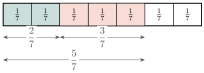
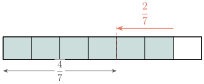

វត្ថុបំណង
- បកស្រាយចំណោទ ដើម្បីបង្ហាញសញ្ញាណប្រភាគនិងប្រភាគសមមូល
- ប្រៀបធៀប រៀបលំដាប់ និងសម្រួលប្រភាគ
- ធ្វើប្រមាណវិធីលើប្រភាគ
- ដោះស្រាយចំណោទដែលទាក់ទងនឹងប្រភាគ ។
1. សញ្ញាណប្រភាគ
ឧទាហរណ៍ ៖ គេកាត់នំមួយជា \(\displaystyle 5\) ផ្នែកស្មើៗគ្នាចែកឱ្យក្មេង \(\displaystyle 5\) នាក់ ហើយក្មេងម្នាក់ៗនឹងទទួលបានមួយផ្នែក (មើលរូប) ។ ផ្នែកនីមួយៗស្មើនឹងមួយភាគប្រាំនៃនំ គេសរសេរ \(\displaystyle \frac{1}{5}\) ។

ប្រភាគជាចំនួនមួយដែលគេសរសេរជាផលចែកនៃមួយចំនួន និងមួយចំនួនផ្សេងទៀតខុសពីសូន្យ ។ ឧទាហរណ៍ ៖ ប្រភាគ \(\displaystyle \frac{4}{5}\) , \(\displaystyle -\frac{2}{3}\) , \(\displaystyle \frac{3}{-5}\) , \(\displaystyle \frac{-2}{5}\) ។
ជាទូទៅ \(\displaystyle \frac{a}{b}\) ជាប្រភាគដែល \(\displaystyle a\), \(\displaystyle b\) ជាចំនួនគត់រ៉ឺឡាទីប ហើយ \(\displaystyle a\) ជាភាគយក និង \(\displaystyle b\) ជាភាគបែងនៃប្រភាគ (\(\displaystyle b\ne0\)) ។
2. ប្រភាគសមមូល
ឧទាហរណ៍ 1 ៖ សុខ សៅ និងសំបានទិញនំម្នាក់មួយមានទំហំប៉ុនៗគ្នា ។
- សុខកាត់នំជា \(\displaystyle 3\) ចំណែកស្មើៗគ្នា ហើយបានញ៉ាំអស់ \(\displaystyle 1\) ចំណែក ។ គេថាសុខបានញ៉ាំអស់ \(\displaystyle \frac{1}{3}\) នៃនំនោះ ។
- សៅកាត់នំជា \(\displaystyle 6\) ចំណែកស្មើៗគ្នា ហើយបានញ៉ាំអស់ \(\displaystyle 2\) ចំណែក ។ គេថាសៅបានញ៉ាំអស់ \(\displaystyle \frac{2}{6}\) នៃនំនោះ ។
- សំកាត់នំជា \(\displaystyle 9\) ចំណែកស្មើៗគ្នា ហើយបានញ៉ាំអស់ \(\displaystyle 3\) ចំណែក ។ គេថាសំបានញ៉ាំអស់ \(\displaystyle \frac{3}{9}\) នៃនំនោះ ។
\(\displaystyle \frac{1}{3}\) , \(\displaystyle \frac{2}{6}\) និង \(\displaystyle \frac{3}{9}\) គឺតាងបរិមាណស្មើគ្នា ជាប្រភាគសមមូល ។ គេសរសេរ
គេសម្គាល់ឃើញថា
ឧទាហរណ៍ 2 ៖
- \(\displaystyle \frac{-3}{4}=\frac{6}{-8}\) ព្រោះ \(\displaystyle (-3)\times(-8)=4\times6=24\)
- \(\displaystyle \frac{3}{7}\ne\frac{-4}{5}\) ព្រោះ \(\displaystyle 3\times5\ne7\times(-4)\) ។
ជាទូទៅ ប្រភាគសមមូល ជាប្រភាគតាងឱ្យបរិមាណស្មើគ្នា ។ បើប្រភាគ \(\displaystyle \frac{a}{b}\) និង \(\displaystyle \frac{c}{d}\) ជាប្រភាគសមមូល មានន័យថា \(\displaystyle \frac{a}{b}=\frac{c}{d}\) លុះត្រាតែ \(\displaystyle a\times d=b\times c\) ដែល \(\displaystyle b\ne0\), \(\displaystyle d\ne0\) ។
ដូច្នេះតម្លៃនៃប្រភាគមិនប្រែប្រួលទេ បើគេគុណឬចែកភាគយកនិងភាគបែងនៃប្រភាគនោះនឹងមួយចំនួនខុសពីសូន្យ មានន័យថា
រកតម្លៃ \(\displaystyle x\) បើគេដឹងថា \(\displaystyle \frac{x}{4}=\frac{21}{28}\) ។
ដូចនេះ \(\displaystyle x=3\) ។
បំពេញចំនួនក្នុងប្រអប់
- ក. \(\displaystyle \frac{2}{7}=\frac{4}{\square}\)
- ខ. \(\displaystyle \frac{-15}{25}=\frac{\square}{5}\)
- គ. \(\displaystyle \frac{4}{9}=\frac{28}{\square}\) ។
មើលចម្លើយ
- ក.
ពី \(\displaystyle 2\) ទៅ \(\displaystyle 4\) គឺគុណនឹង \(\displaystyle 2\) ដូចនេះភាគបែងក៏គុណនឹង \(\displaystyle 2\) ដែរ ៖
\[\frac{2}{7}=\frac{2\times2}{7\times2}=\frac{4}{14} \implies \square=14\] - ខ.
ពី \(\displaystyle 25\) ទៅ \(\displaystyle 5\) គឺចែកនឹង \(\displaystyle 5\) ដូចនេះភាគយកក៏ចែកនឹង \(\displaystyle 5\) ដែរ ៖
\[\frac{-15}{25}=\frac{-15\div5}{25\div5}=\frac{-3}{5} \implies \square=-3\] - គ.
ពី \(\displaystyle 4\) ទៅ \(\displaystyle 28\) គឺគុណនឹង \(\displaystyle 7\) ដូចនេះភាគបែងក៏គុណនឹង \(\displaystyle 7\) ដែរ ៖
\[\frac{4}{9}=\frac{4\times7}{9\times7}=\frac{28}{63} \implies \square=63\]
ដូចនេះ ក. \(\displaystyle 14\) ខ. \(\displaystyle -3\) គ. \(\displaystyle 63\) ។
3. ការសម្រួលប្រភាគ
ឧទាហរណ៍ ៖ សម្រួលប្រភាគ \(\displaystyle \frac{6}{15}\) ។ \(\displaystyle 6\) និង \(\displaystyle 15\) មានតួចែករួមស្មើនឹង \(\displaystyle 3\) ៖ នោះ
\(\displaystyle \frac{2}{5}\) ជាប្រភាគបង្រួមមិនបាន ហើយស្មើគ្នានឹង \(\displaystyle \frac{6}{15}\) ។

ជាទូទៅ
- ការសម្រួលប្រភាគ គឺធ្វើឱ្យប្រភាគនោះទៅជាប្រភាគបង្រួមមិនបានដែលសមមូលនឹងវា ។
- ការសម្រួលប្រភាគអាចចែកភាគយកនិងភាគបែងនៃប្រភាគនោះនឹងតួចែករួមធំបំផុតនៃភាគយកនិងភាគបែង ។
- \(\displaystyle \frac{a}{b}\) ជាប្រភាគ ហើយ \(\displaystyle k\) ជាចំនួនមួយខុសពី \(\displaystyle 0\) គេបាន \(\displaystyle \frac{ka}{kb}=\frac{a}{b}\) ។
សម្រួលប្រភាគ
- ក. \(\displaystyle \frac{16}{40}\) និង \(\displaystyle \frac{70}{245}\)
- ខ. \(\displaystyle \frac{18}{-33}\) និង \(\displaystyle \frac{-36}{-12}\) ។
- ក.
គេបាន ៖
\[\frac{16}{40}=\frac{16\div8}{40\div8}=\frac{2}{5}\]\[\frac{70}{245}=\frac{70\div35}{245\div35}=\frac{2}{7}\] - ខ.
គេបាន ៖
\[\frac{18}{-33}=\frac{18\div3}{(-33)\div3}=\frac{6}{-11}\]\[\frac{-36}{-12}=\frac{36}{12}=\frac{36\div12}{12\div12}=\frac{3}{1}=3\]
សម្រួលប្រភាគ \(\displaystyle \frac{18}{30}\), \(\displaystyle \frac{-19}{57}\) និង \(\displaystyle \frac{-10}{-15}\) ។
មើលចម្លើយ
ដូចនេះ \(\displaystyle \frac{3}{5}\), \(\displaystyle \frac{-1}{3}\) និង \(\displaystyle \frac{2}{3}\) ។
4. ការប្រៀបធៀបនិងរៀបលំដាប់ប្រភាគ
ករណីភាគបែងដូចគ្នា គេប្រៀបធៀបតែភាគយក ។
ឧទាហរណ៍ 1 ៖
- \(\displaystyle \frac{2}{5}<\frac{4}{5}\) ព្រោះ \(\displaystyle 2<4\)
- \(\displaystyle \frac{9}{11}>\frac{3}{11}\) ព្រោះ \(\displaystyle 9>3\)
- \(\displaystyle \frac{-3}{4}<\frac{-1}{4}\) ព្រោះ \(\displaystyle -3<-1\)
- \(\displaystyle \frac{2}{5}>\frac{-4}{5}\) ព្រោះ \(\displaystyle 2>-4\) ។
ករណីភាគបែងខុសគ្នា គេតម្រូវភាគបែងរួមរួចហើយគេប្រៀបធៀបតែភាគយក ។
ឧទាហរណ៍ 2 ៖ ប្រៀបធៀបនិងរៀបប្រភាគ \(\displaystyle \frac{2}{3}\), \(\displaystyle \frac{1}{2}\), \(\displaystyle \frac{3}{8}\) និង \(\displaystyle \frac{5}{6}\) តាមលំដាប់ចុះ ។
ពហុគុណរួមតូចបំផុតនៃភាគបែង \(\displaystyle 3, 2, 8\) និង \(\displaystyle 6\) ស្មើនឹង \(\displaystyle 24\) ។ បន្ទាប់មកគេប្តូរប្រភាគនីមួយៗទៅជាប្រភាគសមមូលដែលមានភាគបែងស្មើនឹង \(\displaystyle 24\) ៖
គេបាន \(\displaystyle \frac{20}{24}>\frac{16}{24}>\frac{12}{24}>\frac{9}{24}\) ។
ដោយរៀបតាមលំដាប់ចុះ គេបាន \(\displaystyle \frac{5}{6}\), \(\displaystyle \frac{2}{3}\), \(\displaystyle \frac{1}{2}\), \(\displaystyle \frac{3}{8}\) ។
ជាទូទៅ
- ដើម្បីប្រៀបធៀបប្រភាគដែលមានភាគបែងដូចគ្នា គេប្រៀបធៀបតែភាគយក ។
- ដើម្បីប្រៀបធៀបប្រភាគដែលមានភាគបែងខុសគ្នា គេត្រូវតម្រូវភាគបែងរួមរួចហើយប្រៀបធៀបភាគយកនិងភាគយក ។
លំហាត់គំរូ 1 ៖ ប្រៀបធៀបនិងរៀបលំដាប់ប្រភាគ \(\displaystyle \frac{11}{12}\), \(\displaystyle \frac{5}{8}\), \(\displaystyle \frac{7}{9}\) និង \(\displaystyle \frac{3}{4}\) តាមលំដាប់ឡើង ។
ដំណោះស្រាយ ពហុគុណរួមតូចបំផុតនៃ \(\displaystyle 12, 8, 9\) និង \(\displaystyle 4\) ស្មើនឹង \(\displaystyle 72\) ។
គេបាន \(\displaystyle \frac{45}{72}<\frac{54}{72}<\frac{56}{72}<\frac{66}{72}\) ។
ដូចនេះ ដោយរៀបតាមលំដាប់ឡើង គេបាន \(\displaystyle \frac{5}{8}\), \(\displaystyle \frac{3}{4}\), \(\displaystyle \frac{7}{9}\), \(\displaystyle \frac{11}{12}\) ។
លំហាត់គំរូ 2 ៖ ប្រៀបធៀបប្រភាគ \(\displaystyle \frac{-3}{4}\) និង \(\displaystyle \frac{4}{-5}\) ។
ដំណោះស្រាយ ប្រភាគ \(\displaystyle \frac{-3}{4}\) និង \(\displaystyle \frac{4}{-5}=\frac{-4}{5}\) មានភាគបែងរួមស្មើនឹង \(\displaystyle 20\) ។
ដោយ \(\displaystyle -15>-16\) នាំឱ្យ \(\displaystyle \frac{-15}{20}>\frac{-16}{20}\) ។
ដូចនេះ \(\displaystyle \frac{-3}{4}>\frac{-4}{5}\) ។
ប្រៀបធៀបប្រភាគ
- ក. \(\displaystyle \frac{24}{60}\), \(\displaystyle \frac{26}{30}\) និង \(\displaystyle \frac{27}{45}\)
- ខ. \(\displaystyle \frac{-11}{12}\), \(\displaystyle \frac{17}{-18}\) និង \(\displaystyle \frac{-9}{25}\) ។
មើលចម្លើយ
- ក.
ពហុគុណរួមតូចបំផុតនៃ \(\displaystyle 60, 30\) និង \(\displaystyle 45\) ស្មើនឹង \(\displaystyle 180\) ៖
\[\frac{24}{60}=\frac{72}{180}, \qquad \frac{26}{30}=\frac{156}{180}, \qquad \frac{27}{45}=\frac{108}{180}\]ដោយ \(\displaystyle 156>108>72\) នោះ \(\displaystyle \frac{26}{30}>\frac{27}{45}>\frac{24}{60}\) ។
- ខ.
គេមាន \(\displaystyle \frac{17}{-18}=\frac{-17}{18}\) ។ ពហុគុណរួមតូចបំផុតនៃ \(\displaystyle 12, 18\) និង \(\displaystyle 25\) ស្មើនឹង \(\displaystyle 900\) ៖
\[\frac{-11}{12}=\frac{-825}{900}, \qquad \frac{-17}{18}=\frac{-850}{900}, \qquad \frac{-9}{25}=\frac{-324}{900}\]ដោយ \(\displaystyle -324>-825>-850\) នោះ \(\displaystyle \frac{-9}{25}>\frac{-11}{12}>\frac{17}{-18}\) ។
5. វិធីបូកនិងដកប្រភាគ
5.1. វិធីបូកប្រភាគមានភាគបែងដូចគ្នា
ឧទាហរណ៍ 1 ៖ គណនា \(\displaystyle \frac{2}{7}+\frac{3}{7}\) ។ តាមរូបបង្ហាញថា

ឧទាហរណ៍ 2 ៖
ជាទូទៅ ដើម្បីបូកប្រភាគដែលមានភាគបែងដូចគ្នា គេបូកតែភាគយករក្សាភាគបែងទុកដដែល
ដែល \(\displaystyle a\), \(\displaystyle b\), \(\displaystyle c\) ជាចំនួនគត់រ៉ឺឡាទីប ហើយ \(\displaystyle c\ne0\) ។
5.2. វិធីបូកប្រភាគមានភាគបែងខុសគ្នា
ឧទាហរណ៍ 1 ៖ គណនា \(\displaystyle \frac{1}{3}+\frac{1}{4}\)
(តម្រូវភាគបែងរួមតូចបំផុតដែលស្មើនឹង \(\displaystyle \text{LCM}(3,4)=12\)) ។
ឧទាហរណ៍ 2 ៖
(តម្រូវភាគបែងរួមតូចបំផុតដែលស្មើនឹង \(\displaystyle \text{LCM}(3,5)=15\)) ។
ជាទូទៅ ដើម្បីបូកប្រភាគដែលមានភាគបែងខុសគ្នា គេត្រូវតម្រូវភាគបែងរួម (គេយក LCM នៃភាគបែងជាភាគបែងរួម) រួចគេបូកភាគយកនិងភាគយក ហើយរក្សាភាគបែងរួមទុកដដែល ។
លក្ខណៈ
- \(\displaystyle \frac{a}{b}+\frac{c}{d}=\frac{c}{d}+\frac{a}{b}\) លក្ខណៈត្រឡប់
- \(\displaystyle \left(\frac{a}{b}+\frac{c}{d}\right)+\frac{p}{q}=\frac{a}{b}+\left(\frac{c}{d}+\frac{p}{q}\right)\) លក្ខណៈផ្តុំ
- \(\displaystyle \frac{a}{b}+0=0+\frac{a}{b}=\frac{a}{b}\)
5.3. វិធីដកប្រភាគមានភាគបែងដូចគ្នា
ឧទាហរណ៍ 1 ៖ គណនា \(\displaystyle \frac{6}{7}-\frac{2}{7}\) ។ តាមរូបបង្ហាញថា

ដូចនេះ
ឧទាហរណ៍ 2 ៖
ជាទូទៅ
ដែល \(\displaystyle a, b, c\) ជាចំនួនគត់រ៉ឺឡាទីប \(\displaystyle c\ne0\) ។
គេថាប្រភាគ \(\displaystyle -\frac{3}{5}\) ផ្ទុយគ្នានឹងប្រភាគ \(\displaystyle \frac{3}{5}\) ព្រោះ \(\displaystyle \frac{3}{5}+\left(-\frac{3}{5}\right)=0\) និង \(\displaystyle \frac{-3}{5}=-\frac{3}{5}\) ។
ដូច្នេះ បើប្រភាគ \(\displaystyle \frac{a}{b}\) ផ្ទុយគ្នានឹង \(\displaystyle -\frac{a}{b}\) គេបាន \(\displaystyle \frac{a}{b}+\left(-\frac{a}{b}\right)=0\) ហើយ
5.4. វិធីដកប្រភាគមានភាគបែងខុសគ្នា
ឧទាហរណ៍ 1 ៖ គណនា \(\displaystyle \frac{7}{8}-\frac{1}{2}\) ។ តាមរូបបង្ហាញថា

ប្រភាគទាំងពីរមានភាគបែងរួម \(\displaystyle \text{LCM}(8,2)=8\) ។
ឧទាហរណ៍ 2 ៖
(ភាគបែងរួម \(\displaystyle \text{LCM}(7,4)=28\)) ។
ជាទូទៅ ដើម្បីដកប្រភាគដែលមានភាគបែងខុសគ្នា គេត្រូវតម្រូវភាគបែងរួម (គេយក LCM នៃភាគបែងជាភាគបែងរួម) រួចគេដកភាគយកនិងភាគយក ហើយរក្សាភាគបែងរួមទុកដដែល ។
គណនា \(\displaystyle x\) ដោយដឹងថា \(\displaystyle \frac{x}{5}=\frac{5}{6}+\frac{-19}{30}\) ។
ដូច្នេះ \(\displaystyle \frac{x}{5}=\frac{1}{5}\) នាំឱ្យ \(\displaystyle x=1\) ។
គណនាកន្សោម
មើលចម្លើយ
ដូចនេះ \(\displaystyle A=\frac{3}{20}\) និង \(\displaystyle B=\frac{19}{56}\) ។
6. វិធីគុណប្រភាគ
ឧទាហរណ៍ 1 ៖ គណនា \(\displaystyle \frac{1}{2}\times\frac{1}{4}\) ។
\(\displaystyle \frac{1}{2}\times\frac{1}{4}\) មានន័យថា \(\displaystyle \frac{1}{2}\) នៃ \(\displaystyle \frac{1}{4}\) ។ គេត្រូវចែក \(\displaystyle \frac{1}{4}\) ជា \(\displaystyle 2\) ផ្នែកស្មើគ្នា រួចហើយយក \(\displaystyle 1\) ផ្នែក ។
តាមរូបបង្ហាញថា
ឧទាហរណ៍ 2 ៖
ជាទូទៅ ដើម្បីគុណប្រភាគ \(\displaystyle \frac{a}{b}\) និង \(\displaystyle \frac{c}{d}\) គេគុណភាគយកនិងភាគយក ហើយគុណភាគបែងនិងភាគបែង គេបាន
ដែល \(\displaystyle b\ne0\) និង \(\displaystyle d\ne0\) ។
- បើ \(\displaystyle d=1\) គេបាន \(\displaystyle \frac{a}{b}\times c=\frac{a\times c}{b}\)
- \(\displaystyle \frac{a}{b}\times\frac{c}{d}=\frac{c}{d}\times\frac{a}{b}\)
- \(\displaystyle \left(\frac{a}{b}\times\frac{c}{d}\right)\times\frac{p}{q}=\frac{a}{b}\times\left(\frac{c}{d}\times\frac{p}{q}\right)\)
- \(\displaystyle \frac{a}{b}\times1=1\times\frac{a}{b}=\frac{a}{b}\)
- \(\displaystyle \frac{a}{b}\times\left(\frac{c}{d}+\frac{p}{q}\right)=\frac{a}{b}\times\frac{c}{d}+\frac{a}{b}\times\frac{p}{q}\)
គណនា
ដូច្នេះ \(\displaystyle A=1\frac{7}{9}\) និង \(\displaystyle B=-10\) ។
គណនា
មើលចម្លើយ
ដូចនេះ \(\displaystyle A=\frac{-247}{252}\) និង \(\displaystyle B=6\) ។
7. វិធីចែកប្រភាគ
ឧទាហរណ៍ 1 ៖ គណនា \(\displaystyle \frac{3}{5}\div\frac{1}{10}\) ។
គេអាចសួរថា “តើគេអាចដក \(\displaystyle \frac{1}{10}\) ចេញពី \(\displaystyle \frac{3}{5}\) បានប៉ុន្មានដង?” តាមរូបបង្ហាញឱ្យឃើញថា គេអាចដក \(\displaystyle \frac{1}{10}\) បានដល់ទៅ \(\displaystyle 6\) ដងចេញពី \(\displaystyle \frac{3}{5}\) ។

ដូច្នេះ \(\displaystyle \frac{3}{5}\div\frac{1}{10}=\frac{3}{5}\times\frac{10}{1}\) ។
ឧទាហរណ៍ 2 ៖ គណនា \(\displaystyle \frac{-3}{4}\div2\) តាមលទ្ធផលខាងលើ
ជាទូទៅ ដើម្បីចែកប្រភាគនិងប្រភាគ គេត្រូវយកប្រភាគទី \(\displaystyle 1\) គុណនឹងចម្រាសនៃប្រភាគទី \(\displaystyle 2\) ។ ចំពោះប្រភាគ \(\displaystyle \frac{a}{b}\) និង \(\displaystyle \frac{c}{d}\) ដែល \(\displaystyle b\ne0\), \(\displaystyle c\ne0\), \(\displaystyle d\ne0\) គេបាន
ចម្រាសនៃ \(\displaystyle 2\) គឺ \(\displaystyle \frac{1}{2}\) ចម្រាសនៃ \(\displaystyle \frac{1}{3}\) គឺ \(\displaystyle 3\) និងចម្រាសនៃ \(\displaystyle -\frac{2}{5}\) គឺ \(\displaystyle -\frac{5}{2}\) ។
ជាទូទៅ ចម្រាសនៃ \(\displaystyle a\) គឺ \(\displaystyle \frac{1}{a}\) និងចម្រាសនៃ \(\displaystyle \frac{a}{b}\) គឺ \(\displaystyle \frac{b}{a}\) ។
គណនាកន្សោម \(\displaystyle A=\left(\frac{1}{5}-\frac{1}{2}\right)\div\left(-\frac{2}{3}\times\frac{1}{8}\right)\) ។
ដូច្នេះ \(\displaystyle A=3\frac{3}{5}\) ។
- ក. គណនាកន្សោម \(\displaystyle A=\frac{3}{5}\times\left(-\frac{1}{4}-\frac{1}{6}\right)\div\left(-2\frac{1}{3}+1\frac{1}{4}\right)\)
- ខ. គណនា \(\displaystyle x\) បើគេដឹងថា \(\displaystyle \frac{3}{4}\div x=2\) ។
មើលចម្លើយ
- ក.
គេបាន ៖
\[\begin{aligned} A &= \frac{3}{5}\times\left(\frac{-3-2}{12}\right)\div\left(\frac{-7}{3}+\frac{5}{4}\right) \\ &= \frac{3}{5}\times\left(-\frac{5}{12}\right)\div\left(\frac{-28+15}{12}\right) \\ &= \left(-\frac{1}{4}\right)\div\left(-\frac{13}{12}\right) \\ &= \left(-\frac{1}{4}\right)\times\left(-\frac{12}{13}\right) \\ &= \frac{3}{13} \end{aligned}\] - ខ.
គេបាន ៖
\[\begin{aligned} \frac{3}{4}\div x &= 2 \\ x &= \frac{3}{4}\div2 \\ &= \frac{3}{4}\times\frac{1}{2} \\ &= \frac{3}{8} \end{aligned}\]
ដូចនេះ ក. \(\displaystyle A=\frac{3}{13}\) ខ. \(\displaystyle x=\frac{3}{8}\) ។
8. ចំណោទ
ឧទាហរណ៍ 1 ៖ ម្តាយចែកប្រាក់ឱ្យកូន \(\displaystyle 4\) នាក់ ។ កូនទី \(\displaystyle 1\) ទទួលបាន \(\displaystyle \frac{1}{6}\) កូនទី \(\displaystyle 2\) ទទួលបាន \(\displaystyle \frac{1}{4}\) កូនទី \(\displaystyle 3\) ទទួលបាន \(\displaystyle \frac{1}{2}\) នៃប្រាក់ដែលគាត់បានយកមកចែក និងកូនទី \(\displaystyle 4\) ទទួលបាន \(\displaystyle 20~000~\text{៛}\) ។ តើប្រាក់ដែលគាត់បានចែកឱ្យកូនទាំងអស់មានប៉ុន្មានរៀល?
ប្រភាគតាងឱ្យប្រាក់ដែលកូនទី \(\displaystyle 1\) ទី \(\displaystyle 2\) និងទី \(\displaystyle 3\) ទទួលបាន
ប្រភាគតាងឱ្យប្រាក់កូនទី \(\displaystyle 4\) ទទួលបានគឺ
ដូច្នេះប្រាក់ដែលគាត់បានចែកឱ្យកូនទាំងអស់មានចំនួន \(\displaystyle 240~000~\text{៛}\) ។

ឧទាហរណ៍ 2 ៖ ម៉ាស៊ីនទី \(\displaystyle 1\) បូមទឹកដាក់អាងមួយពេញក្នុងរយៈពេល \(\displaystyle 5\) ម៉ោង ។ ម៉ាស៊ីនមួយទៀតបូមទឹកដាក់អាងនោះពេញក្នុងរយៈពេល \(\displaystyle 6\) ម៉ោង ។ បើម៉ាស៊ីនទាំងពីរនេះបូមទឹកដាក់អាងព្រមគ្នា តើរយៈពេលប៉ុន្មានទើបទឹកពេញអាង?

ក្នុង \(\displaystyle 1\) ម៉ោងម៉ាស៊ីនបូមទឹកទី \(\displaystyle 1\) បូមទឹកដាក់អាងបាន \(\displaystyle \frac{1}{5}\) ។
ក្នុង \(\displaystyle 1\) ម៉ោងម៉ាស៊ីនបូមទឹកទី \(\displaystyle 2\) បូមទឹកដាក់អាងបាន \(\displaystyle \frac{1}{6}\) ។
ម៉ាស៊ីនទាំងពីរបូមព្រមគ្នា \(\displaystyle 1\) ម៉ោងបាន
ដូច្នេះម៉ាស៊ីនទាំងពីរបូមទឹកដាក់អាងរួមគ្នាប្រើអស់រយៈពេល \(\displaystyle 2\frac{8}{11}\) ម៉ោងទើបពេញអាង ។
ឧទាហរណ៍ 3 ៖ វិចិត្រទទួលបានប្រាក់ចំណូលសរុប \(\displaystyle 800~000~\text{៛}\) ដែល \(\displaystyle \frac{3}{4}\) នៃប្រាក់ចំណូលនេះបានមកពីការងារ ។ គណនាប្រាក់ចំណូលបានមកពីការងាររបស់វិចិត្រ ។
ដូច្នេះប្រាក់ចំណូលរបស់វិចិត្របានពីការងារគឺ \(\displaystyle 600~000~\text{៛}\) ។
លំហាត់គំរូ 1 ៖ កសិដ្ឋានចិញ្ចឹមសត្វមួយកន្លែងទទួលប្រាក់ចំណូល \(\displaystyle 3~800~000~\text{៛}\) ក្នុង \(\displaystyle 1\) ខែ ។ ក្នុងនោះប្រាក់ចំណូលពីការលក់មាន់ស្មើនឹង \(\displaystyle \frac{1}{4}\) នៃប្រាក់ចំណូលសរុបនិងពីការលក់ជ្រូកស្មើនឹង \(\displaystyle \frac{2}{4}\) ហើយប្រាក់ចំណូលដែលនៅសល់គឺបានពីការលក់ត្រី ។ គណនាប្រាក់ចំណូលពីការលក់ត្រី ។
ដំណោះស្រាយ ប្រភាគតាងឱ្យប្រាក់ចំណូលពីការលក់មាន់និងការលក់ជ្រូក ៖
ប្រភាគតាងឱ្យប្រាក់ចំណូលពីការលក់ត្រី ៖
ប្រាក់ចំណូលពីការលក់ត្រី ៖
ដូច្នេះ ប្រាក់ចំណូលពីការលក់ត្រីគឺ \(\displaystyle 950~000~\text{៛}\) ។
លំហាត់គំរូ 2 ៖ \(\displaystyle \frac{2}{3}\) នៃប្រាក់ចំណូលរបស់អ្នកត្រូវបានចំណាយលើតម្រូវការបង់ប្រាក់ផ្សេងៗ ហើយ \(\displaystyle \frac{1}{3}\) នៃប្រាក់ចំណូលសម្រាប់ការសន្សំ ។ បើអ្នកសន្សំបានប្រាក់ \(\displaystyle 300~000~\text{៛}\) ក្នុងមួយខែ តើអ្នកទទួលបានប្រាក់ចំណូលប្រចាំខែប៉ុន្មាន?
ដំណោះស្រាយ
ដូច្នេះប្រាក់ចំណូលប្រចាំខែគឺ \(\displaystyle 900~000~\text{៛}\) ។
ប្រតិបត្តិ 1 ៖ ចិន្តាអានសៀវភៅមួយដល់ទំព័រទី \(\displaystyle 377\) ។ បន្ទាប់មកនាងដឹងថា នាងអានបាន \(\displaystyle \frac{13}{15}\) នៃសៀវភៅនេះ ។ តើសៀវភៅនោះមានចំនួនប៉ុន្មានទំព័រ?
ចម្លើយ \(\displaystyle \frac{13}{15}\) នៃសៀវភៅស្មើនឹង \(\displaystyle 377\) ទំព័រ ។
ដូចនេះ សៀវភៅនោះមាន \(\displaystyle 435\) ទំព័រ ។
ប្រតិបត្តិ 2 ៖ ពូ ស៊ឹមរកប្រាក់ចំណូលបាន \(\displaystyle 900~000~\text{៛}\) ក្នុង \(\displaystyle 1\) ខែពីការរត់តាក់ស៊ី ។ ប្រពន្ធគាត់ជាអ្នកលក់កាហ្វេហើយរកចំណូលក្នុង \(\displaystyle 1\) ខែបាន \(\displaystyle \frac{3}{4}\) នៃប្រាក់ចំណូលរបស់ពូស៊ឹម ។ គណនាប្រាក់ចំណូលសរុបក្នុង \(\displaystyle 1\) ខែរបស់ពូស៊ឹមនិងប្រពន្ធគាត់ ។
ចម្លើយ
ដូចនេះ ប្រាក់ចំណូលសរុបគឺ \(\displaystyle 1~575~000~\text{៛}\) ។
លំហាត់
បំពេញចំនួនក្នុងប្រអប់ខាងក្រោម ៖
- ក. \(\displaystyle \frac{3}{5}=\frac{\square}{20}\)
- ខ. \(\displaystyle \frac{\square}{8}=\frac{-28}{32}\)
- គ. \(\displaystyle \frac{3}{4}=\frac{\square}{-8}=\frac{-24}{\square}=\frac{21}{\square}\) ។
មើលដំណោះស្រាយ
- ក.
\(\displaystyle 20=5\times4\) ដូចនេះគុណភាគយកនឹង \(\displaystyle 4\) ដែរ ៖
\[\frac{3}{5}=\frac{3\times4}{5\times4}=\frac{12}{20} \implies \square=12\] - ខ.
\(\displaystyle 32=8\times4\) ដូចនេះចែកភាគយក \(\displaystyle -28\) នឹង \(\displaystyle 4\) ៖
\[\frac{-28}{32}=\frac{-28\div4}{32\div4}=\frac{-7}{8} \implies \square=-7\] - គ.
តម្រូវប្រភាគ \(\displaystyle \frac{3}{4}\) ទៅតាមភាគបែង ឬភាគយកនីមួយៗ ៖
\[\frac{3}{4}=\frac{3\times(-2)}{4\times(-2)}=\frac{-6}{-8} \implies \square=-6\]\[\frac{3}{4}=\frac{3\times(-8)}{4\times(-8)}=\frac{-24}{-32} \implies \square=-32\]\[\frac{3}{4}=\frac{3\times7}{4\times7}=\frac{21}{28} \implies \square=28\]
សម្រួលប្រភាគខាងក្រោម ៖
- ក. \(\displaystyle \frac{6}{9}\)
- ខ. \(\displaystyle \frac{18}{33}\)
- គ. \(\displaystyle \frac{-84}{196}\)
- ឃ. \(\displaystyle \frac{-625}{-1000}\)
- ង. \(\displaystyle \frac{2232}{4464}\) ។
មើលដំណោះស្រាយ
- ក.
គេបាន ៖
\[\frac{6}{9}=\frac{6\div3}{9\div3}=\frac{2}{3}\] - ខ.
គេបាន ៖
\[\frac{18}{33}=\frac{18\div3}{33\div3}=\frac{6}{11}\] - គ.
\(\displaystyle \text{GCD}(84,196)=28\) ដូចនេះ
\[\frac{-84}{196}=\frac{(-84)\div28}{196\div28}=\frac{-3}{7}\] - ឃ.
គេបាន ៖
\[\frac{-625}{-1000}=\frac{625}{1000}=\frac{625\div125}{1000\div125}=\frac{5}{8}\] - ង.
ដោយ \(\displaystyle 4464=2232\times2\) នោះ
\[\frac{2232}{4464}=\frac{2232\div2232}{4464\div2232}=\frac{1}{2}\]
គណនាចំនួន \(\displaystyle x\) និង \(\displaystyle y\) ខាងក្រោម ៖
- ក. \(\displaystyle \frac{x}{7}=\frac{6}{21}\)
- ខ. \(\displaystyle \frac{-5}{y}=\frac{20}{28}\)
- គ. \(\displaystyle x\cdot\frac{3}{7}=\frac{2}{3}\)
- ឃ. \(\displaystyle x\div\frac{8}{11}=\frac{11}{3}\) ។
មើលដំណោះស្រាយ
- ក.
គេបាន ៖
\[\begin{aligned} \frac{x}{7} &= \frac{6}{21} \\ x\times21 &= 7\times6 \\ x &= \frac{42}{21} = 2 \end{aligned}\] - ខ.
គេបាន ៖
\[\begin{aligned} \frac{-5}{y} &= \frac{20}{28} \\ (-5)\times28 &= y\times20 \\ y &= \frac{-140}{20} = -7 \end{aligned}\] - គ.
គេបាន ៖
\[\begin{aligned} x\cdot\frac{3}{7} &= \frac{2}{3} \\ x &= \frac{2}{3}\div\frac{3}{7} \\ &= \frac{2}{3}\times\frac{7}{3} \\ &= \frac{14}{9} \end{aligned}\] - ឃ.
គេបាន ៖
\[\begin{aligned} x\div\frac{8}{11} &= \frac{11}{3} \\ x &= \frac{11}{3}\times\frac{8}{11} \\ &= \frac{8}{3} \end{aligned}\]
ប្រៀបធៀបនិងរៀបប្រភាគខាងក្រោម តាមលំដាប់ចុះ ៖
- ក. \(\displaystyle \frac{7}{11}\), \(\displaystyle \frac{5}{6}\), \(\displaystyle \frac{4}{9}\), \(\displaystyle \frac{2}{3}\)
- ខ. \(\displaystyle \frac{1}{2}\), \(\displaystyle \frac{2}{3}\), \(\displaystyle \frac{3}{4}\), \(\displaystyle \frac{7}{8}\), \(\displaystyle \frac{7}{12}\) ។
មើលដំណោះស្រាយ
- ក.
\(\displaystyle \text{LCM}(11,6,9,3)=198\) ៖
\[\frac{7}{11}=\frac{126}{198}, \quad \frac{5}{6}=\frac{165}{198}, \quad \frac{4}{9}=\frac{88}{198}, \quad \frac{2}{3}=\frac{132}{198}\]ដោយ \(\displaystyle 165>132>126>88\) នោះ
\[\frac{5}{6}>\frac{2}{3}>\frac{7}{11}>\frac{4}{9}\] - ខ.
\(\displaystyle \text{LCM}(2,3,4,8,12)=24\) ៖
\[\frac{1}{2}=\frac{12}{24}, \quad \frac{2}{3}=\frac{16}{24}, \quad \frac{3}{4}=\frac{18}{24}, \quad \frac{7}{8}=\frac{21}{24}, \quad \frac{7}{12}=\frac{14}{24}\]ដោយ \(\displaystyle 21>18>16>14>12\) នោះ
\[\frac{7}{8}>\frac{3}{4}>\frac{2}{3}>\frac{7}{12}>\frac{1}{2}\]
បំពេញសញ្ញា (\(\displaystyle <\), \(\displaystyle >\)) ក្នុងប្រអប់ខាងក្រោម ៖
- ក. \(\displaystyle \frac{-8}{9}\square\frac{-7}{9}\)
- ខ. \(\displaystyle \frac{-1}{3}\square\frac{-2}{3}\)
- គ. \(\displaystyle \frac{3}{7}\square\frac{-6}{7}\)
- ឃ. \(\displaystyle \frac{-3}{11}\square\frac{0}{11}\) ។
មើលដំណោះស្រាយ
ភាគបែងដូចគ្នា ដូចនេះប្រៀបធៀបតែភាគយក ៖
- ក. \(\displaystyle -8<-7\) នោះ \(\displaystyle \frac{-8}{9}<\frac{-7}{9}\)
- ខ. \(\displaystyle -1>-2\) នោះ \(\displaystyle \frac{-1}{3}>\frac{-2}{3}\)
- គ. \(\displaystyle 3>-6\) នោះ \(\displaystyle \frac{3}{7}>\frac{-6}{7}\)
- ឃ. \(\displaystyle -3<0\) នោះ \(\displaystyle \frac{-3}{11}<\frac{0}{11}\)
គណនារួចសម្រួល ៖
- ក. \(\displaystyle \frac{14}{20}+\frac{7}{20}\)
- ខ. \(\displaystyle 6\frac{7}{8}-3\frac{4}{8}\)
- គ. \(\displaystyle \frac{7}{-25}+\frac{-8}{25}\)
- ឃ. \(\displaystyle -\left(\frac{1}{4}\right)^{2}+\left(\frac{2}{3}\right)^{3}\)
- ង. \(\displaystyle \frac{8}{15}+\frac{11}{15}+\frac{7}{15}\)
- ច. \(\displaystyle 5\frac{3}{10}-3\frac{4}{-18}\)
- ឆ. \(\displaystyle \frac{4}{5}+\left(-\frac{4}{18}\right)\)
- ជ. \(\displaystyle 2\frac{19}{4}-\frac{1}{18}+\frac{61}{72}-\frac{1}{36}\) ។
មើលដំណោះស្រាយ
- ក.
គេបាន ៖
\[\frac{14}{20}+\frac{7}{20}=\frac{14+7}{20}=\frac{21}{20}=1\frac{1}{20}\] - ខ.
គេបាន ៖
\[\begin{aligned} 6\frac{7}{8}-3\frac{4}{8} &= (6-3)+\frac{7-4}{8} \\ &= 3\frac{3}{8} = \frac{27}{8} \end{aligned}\] - គ.
គេបាន ៖
\[\begin{aligned} \frac{7}{-25}+\frac{-8}{25} &= \frac{-7}{25}+\frac{-8}{25} \\ &= \frac{-15}{25} \\ &= \frac{-3}{5} \end{aligned}\] - ឃ.
គេបាន ៖
\[\begin{aligned} -\left(\frac{1}{4}\right)^{2}+\left(\frac{2}{3}\right)^{3} &= -\frac{1}{16}+\frac{8}{27} \\ &= \frac{-27}{432}+\frac{128}{432} \\ &= \frac{101}{432} \end{aligned}\] - ង.
គេបាន ៖
\[\begin{aligned} \frac{8}{15}+\frac{11}{15}+\frac{7}{15} &= \frac{8+11+7}{15} \\ &= \frac{26}{15} = 1\frac{11}{15} \end{aligned}\] - ច.
គេយក \(\displaystyle 3\frac{4}{-18}=3+\frac{4}{-18}=3-\frac{2}{9}=\frac{25}{9}\) ៖
\[\begin{aligned} 5\frac{3}{10}-3\frac{4}{-18} &= \frac{53}{10}-\frac{25}{9} \\ &= \frac{477}{90}-\frac{250}{90} \\ &= \frac{227}{90} = 2\frac{47}{90} \end{aligned}\] - ឆ.
គេបាន ៖
\[\begin{aligned} \frac{4}{5}+\left(-\frac{4}{18}\right) &= \frac{4}{5}-\frac{2}{9} \\ &= \frac{36}{45}-\frac{10}{45} \\ &= \frac{26}{45} \end{aligned}\] - ជ.
គេយក \(\displaystyle 2\frac{19}{4}=2+\frac{19}{4}=\frac{27}{4}\) ។ ភាគបែងរួម \(\displaystyle \text{LCM}(4,18,72,36)=72\) ៖
\[\begin{aligned} 2\frac{19}{4}-\frac{1}{18}+\frac{61}{72}-\frac{1}{36} &= \frac{486}{72}-\frac{4}{72}+\frac{61}{72}-\frac{2}{72} \\ &= \frac{486-4+61-2}{72} \\ &= \frac{541}{72} = 7\frac{37}{72} \end{aligned}\]
- ក. តើរយៈពេលណាមួយវែងជាង \(\displaystyle \frac{3}{2}\) ម៉ោង ឬ \(\displaystyle \frac{3}{4}\) ម៉ោង ?
- ខ. តើបន្ទាត់ទាំងពីរនេះណាមួយខ្លីជាង \(\displaystyle \frac{7}{10}\) m ឬ \(\displaystyle \frac{3}{4}\) m ?
- គ. តើម៉ាសណាមួយធំជាង \(\displaystyle \frac{7}{8}\) kg ឬ \(\displaystyle \frac{9}{10}\) kg ?
- ឃ. តើល្បឿនណាមួយតូចជាង \(\displaystyle \frac{5}{6}\) km/h ឬ \(\displaystyle \frac{7}{9}\) km/h ?
មើលដំណោះស្រាយ
- ក. \(\displaystyle \frac{3}{2}=\frac{6}{4}\) ហើយ \(\displaystyle \frac{6}{4}>\frac{3}{4}\) ។ ដូចនេះ \(\displaystyle \frac{3}{2}\) ម៉ោង វែងជាង ។
- ខ.
\(\displaystyle \text{LCM}(10,4)=20\) ៖
\[\frac{7}{10}=\frac{14}{20}, \qquad \frac{3}{4}=\frac{15}{20}\]ដោយ \(\displaystyle 14<15\) ដូចនេះ \(\displaystyle \frac{7}{10}\) m ខ្លីជាង ។
- គ.
\(\displaystyle \text{LCM}(8,10)=40\) ៖
\[\frac{7}{8}=\frac{35}{40}, \qquad \frac{9}{10}=\frac{36}{40}\]ដោយ \(\displaystyle 35<36\) ដូចនេះ \(\displaystyle \frac{9}{10}\) kg ធំជាង ។
- ឃ.
\(\displaystyle \text{LCM}(6,9)=18\) ៖
\[\frac{5}{6}=\frac{15}{18}, \qquad \frac{7}{9}=\frac{14}{18}\]ដោយ \(\displaystyle 14<15\) ដូចនេះ \(\displaystyle \frac{7}{9}\) km/h តូចជាង ។
គណនា រួចសម្រួលលទ្ធផល ៖
- ក. \(\displaystyle 20\times\frac{4}{5}\)
- ខ. \(\displaystyle \frac{7}{11}\times\frac{-3}{41}\times\frac{11}{7}\)
- គ. \(\displaystyle \frac{-5}{9}\times\frac{13}{28}-\frac{13}{28}\times\frac{4}{9}\)
- ឃ. \(\displaystyle \left(-8\frac{1}{3}\right)\times\left(2\frac{2}{5}\right)\)
- ង. \(\displaystyle \frac{9}{28}\div\frac{6}{7}\)
- ច. \(\displaystyle 12\frac{1}{4}\div\left(-\frac{14}{3}\right)\)
- ឆ. \(\displaystyle \frac{3}{4}\div\left(-\frac{-2}{3}\right)^{2}\) ។
មើលដំណោះស្រាយ
- ក.
គេបាន ៖
\[20\times\frac{4}{5}=\frac{20\times4}{5}=\frac{80}{5}=16\] - ខ.
គេបាន ៖
\[\begin{aligned} \frac{7}{11}\times\frac{-3}{41}\times\frac{11}{7} &= \left(\frac{7}{11}\times\frac{11}{7}\right)\times\frac{-3}{41} \\ &= 1\times\frac{-3}{41} \\ &= \frac{-3}{41} \end{aligned}\] - គ.
គេបាន ៖
\[\begin{aligned} \frac{-5}{9}\times\frac{13}{28}-\frac{13}{28}\times\frac{4}{9} &= \frac{13}{28}\times\left(\frac{-5}{9}-\frac{4}{9}\right) \\ &= \frac{13}{28}\times\frac{-9}{9} \\ &= \frac{13}{28}\times(-1) \\ &= \frac{-13}{28} \end{aligned}\] - ឃ.
គេបាន ៖
\[\begin{aligned} \left(-8\frac{1}{3}\right)\times\left(2\frac{2}{5}\right) &= \frac{-25}{3}\times\frac{12}{5} \\ &= -\frac{25\times12}{3\times5} \\ &= -20 \end{aligned}\] - ង.
គេបាន ៖
\[\begin{aligned} \frac{9}{28}\div\frac{6}{7} &= \frac{9}{28}\times\frac{7}{6} \\ &= \frac{9\times7}{28\times6} \\ &= \frac{3}{8} \end{aligned}\] - ច.
គេបាន ៖
\[\begin{aligned} 12\frac{1}{4}\div\left(-\frac{14}{3}\right) &= \frac{49}{4}\times\left(-\frac{3}{14}\right) \\ &= -\frac{49\times3}{4\times14} \\ &= -\frac{21}{8} = -2\frac{5}{8} \end{aligned}\] - ឆ.
ដោយ \(\displaystyle -\frac{-2}{3}=\frac{2}{3}\) ៖
\[\begin{aligned} \frac{3}{4}\div\left(-\frac{-2}{3}\right)^{2} &= \frac{3}{4}\div\left(\frac{2}{3}\right)^{2} \\ &= \frac{3}{4}\div\frac{4}{9} \\ &= \frac{3}{4}\times\frac{9}{4} \\ &= \frac{27}{16} = 1\frac{11}{16} \end{aligned}\]
គណនា រួចសម្រួល ៖
- ក. \(\displaystyle \left(\frac{1}{5}-\frac{1}{2}\right)\div\left(-\frac{2}{3}\times\frac{1}{8}\right)\)
- ខ. \(\displaystyle \frac{11}{12}\times\left(-\frac{23}{33}+\frac{7}{11}\right)\)
- គ. \(\displaystyle \frac{3}{5}\times\left(-\frac{1}{4}-\frac{1}{6}\right)\div\left(-2\frac{1}{3}+1\frac{1}{4}\right)\)
- ឃ. \(\displaystyle \left(-1\frac{1}{6}\times2\frac{1}{2}\times1\frac{3}{5}\right)\div\left[1\frac{1}{4}\times\left(-2\frac{3}{10}\right)\times1\frac{2}{3}\right]\)
- ង. \(\displaystyle \dfrac{5\frac{3}{4}+2\frac{2}{3}\times1\frac{5}{16}}{\frac{2}{5}+\frac{4}{15}}\)
- ច. \(\displaystyle \left(1\frac{1}{5}+\frac{7}{22}\right)\div\left(\frac{7}{15}+\frac{2}{5}\right)\)
- ឆ. \(\displaystyle \left(\dfrac{1-\frac{1}{2}}{1+\frac{1}{2}}\times\dfrac{\frac{7}{6}-\frac{1}{3}}{\frac{4}{3}}\times\dfrac{-18}{10}\right)\div\left(\dfrac{2}{2}\times\dfrac{1-\frac{1}{7}}{1+\frac{1}{7}}\right)\) ។
មើលដំណោះស្រាយ
- ក.
គេបាន ៖
\[\begin{aligned} \left(\frac{1}{5}-\frac{1}{2}\right)\div\left(-\frac{2}{3}\times\frac{1}{8}\right) &= \left(\frac{2-5}{10}\right)\div\left(-\frac{1}{12}\right) \\ &= \left(-\frac{3}{10}\right)\times(-12) \\ &= \frac{18}{5} = 3\frac{3}{5} \end{aligned}\] - ខ.
គេបាន ៖
\[\begin{aligned} \frac{11}{12}\times\left(-\frac{23}{33}+\frac{7}{11}\right) &= \frac{11}{12}\times\left(-\frac{23}{33}+\frac{21}{33}\right) \\ &= \frac{11}{12}\times\frac{-2}{33} \\ &= \frac{-22}{396} \\ &= \frac{-1}{18} \end{aligned}\] - គ.
គេបាន ៖
\[\begin{aligned} &\frac{3}{5}\times\left(-\frac{1}{4}-\frac{1}{6}\right)\div\left(-2\frac{1}{3}+1\frac{1}{4}\right) \\ &= \frac{3}{5}\times\left(-\frac{5}{12}\right)\div\left(-\frac{13}{12}\right) \\ &= \left(-\frac{1}{4}\right)\times\left(-\frac{12}{13}\right) \\ &= \frac{3}{13} \end{aligned}\] - ឃ.
គណនាតួទី \(\displaystyle 1\) និងតួទី \(\displaystyle 2\) ដោយឡែកពីគ្នា ៖
\[\begin{aligned} -1\frac{1}{6}\times2\frac{1}{2}\times1\frac{3}{5} &= -\frac{7}{6}\times\frac{5}{2}\times\frac{8}{5} \\ &= -\frac{7\times5\times8}{6\times2\times5} = -\frac{14}{3} \end{aligned}\]\[\begin{aligned} 1\frac{1}{4}\times\left(-2\frac{3}{10}\right)\times1\frac{2}{3} &= \frac{5}{4}\times\left(-\frac{23}{10}\right)\times\frac{5}{3} \\ &= -\frac{5\times23\times5}{4\times10\times3} = -\frac{115}{24} \end{aligned}\]\[\begin{aligned} \left(-\frac{14}{3}\right)\div\left(-\frac{115}{24}\right) &= \frac{14}{3}\times\frac{24}{115} \\ &= \frac{112}{115} \end{aligned}\] - ង.
គណនាភាគយក និងភាគបែងដោយឡែកពីគ្នា ៖
\[\begin{aligned} 5\frac{3}{4}+2\frac{2}{3}\times1\frac{5}{16} &= \frac{23}{4}+\frac{8}{3}\times\frac{21}{16} \\ &= \frac{23}{4}+\frac{7}{2} \\ &= \frac{23}{4}+\frac{14}{4}=\frac{37}{4} \end{aligned}\]\[\frac{2}{5}+\frac{4}{15}=\frac{6}{15}+\frac{4}{15}=\frac{10}{15}=\frac{2}{3}\]\[\frac{37}{4}\div\frac{2}{3}=\frac{37}{4}\times\frac{3}{2}=\frac{111}{8}=13\frac{7}{8}\] - ច.
គេបាន ៖
\[\begin{aligned} 1\frac{1}{5}+\frac{7}{22} &= \frac{6}{5}+\frac{7}{22} = \frac{132}{110}+\frac{35}{110} = \frac{167}{110} \\ \frac{7}{15}+\frac{2}{5} &= \frac{7}{15}+\frac{6}{15} = \frac{13}{15} \end{aligned}\]\[\begin{aligned} \frac{167}{110}\div\frac{13}{15} &= \frac{167}{110}\times\frac{15}{13} \\ &= \frac{167\times3}{22\times13} \\ &= \frac{501}{286} = 1\frac{215}{286} \end{aligned}\] - ឆ.
គណនាកត្តានីមួយៗ ៖
\[\frac{1-\frac{1}{2}}{1+\frac{1}{2}}=\frac{\frac{1}{2}}{\frac{3}{2}}=\frac{1}{3}, \qquad \frac{\frac{7}{6}-\frac{1}{3}}{\frac{4}{3}}=\frac{\frac{5}{6}}{\frac{4}{3}}=\frac{5}{8}, \qquad \frac{-18}{10}=\frac{-9}{5}\]\[\frac{1-\frac{1}{7}}{1+\frac{1}{7}}=\frac{\frac{6}{7}}{\frac{8}{7}}=\frac{3}{4}\]\[\begin{aligned} \text{តួទី } 1 &= \frac{1}{3}\times\frac{5}{8}\times\frac{-9}{5} = \frac{-3}{8} \\ \text{តួទី } 2 &= \frac{2}{2}\times\frac{3}{4} = \frac{3}{4} \end{aligned}\]\[\frac{-3}{8}\div\frac{3}{4}=\frac{-3}{8}\times\frac{4}{3}=\frac{-1}{2}\]
ពិនិត្យលំនាំគំរូ
\[\frac{1}{1\times2}=\frac{1}{1}-\frac{1}{2}, \qquad \frac{1}{2\times3}=\frac{1}{2}-\frac{1}{3}, \qquad \frac{1}{3\times4}=\frac{1}{3}-\frac{1}{4}\]តាមលំនាំគំរូនេះ គណនា
\[\frac{1}{1\times2}+\frac{1}{2\times3}+\frac{1}{3\times4}+\frac{1}{4\times5}+\dots+\frac{1}{1995\times1996}\]មើលដំណោះស្រាយ
តាមលំនាំគំរូ \(\displaystyle \frac{1}{n\times(n+1)}=\frac{1}{n}-\frac{1}{n+1}\) ដូចនេះ ៖
\[\begin{aligned} S &= \left(\frac{1}{1}-\frac{1}{2}\right)+\left(\frac{1}{2}-\frac{1}{3}\right)+\left(\frac{1}{3}-\frac{1}{4}\right)+\dots+\left(\frac{1}{1995}-\frac{1}{1996}\right) \\ &= \frac{1}{1}-\frac{1}{2}+\frac{1}{2}-\frac{1}{3}+\frac{1}{3}-\dots-\frac{1}{1995}+\frac{1}{1995}-\frac{1}{1996} \\ &= 1-\frac{1}{1996} \\ &= \frac{1995}{1996} \end{aligned}\]ពិនិត្យលំនាំគំរូ
\[\frac{1}{1}=\frac{1}{1}, \qquad \frac{1}{2}=\frac{2}{1+3}, \qquad \frac{1}{3}=\frac{3}{1+3+5}, \qquad \frac{1}{4}=\frac{4}{1+3+5+7}\]សរសេរប្រភាគ \(\displaystyle \frac{1}{5}\), \(\displaystyle \frac{1}{6}\), \(\displaystyle \frac{1}{7}\) និង \(\displaystyle \frac{1}{8}\) តាមលំនាំគំរូខាងលើ ។
មើលដំណោះស្រាយ
ភាគយកស្មើនឹងចំនួនតួនៃផលបូកខាងក្រោម ហើយភាគបែងជាផលបូកនៃចំនួនសេសតាមលំដាប់ចាប់ពី \(\displaystyle 1\) ៖
\[\begin{aligned} \frac{1}{5} &= \frac{5}{1+3+5+7+9} \\ \frac{1}{6} &= \frac{6}{1+3+5+7+9+11} \\ \frac{1}{7} &= \frac{7}{1+3+5+7+9+11+13} \\ \frac{1}{8} &= \frac{8}{1+3+5+7+9+11+13+15} \end{aligned}\](ផលបូកនៃចំនួនសេស \(\displaystyle n\) តួដំបូងស្មើ \(\displaystyle n^2\) ដូចនេះ \(\displaystyle \frac{n}{n^2}=\frac{1}{n}\)) ។
នៅថ្ងៃចន្ទ សុភ័ក្ត្របានចំណាយអស់ \(\displaystyle \frac{7}{24}\) នៅថ្ងៃអង្គារចំណាយអស់ \(\displaystyle \frac{1}{4}\) នៅថ្ងៃពុធចំណាយអស់ \(\displaystyle \frac{1}{3}\) នៃប្រាក់របស់គាត់ ។ រកប្រភាគតាងប្រាក់របស់សុភ័ក្ត្រដែលនៅសល់សម្រាប់ចំណាយថ្ងៃព្រហស្បតិ៍ ។
មើលដំណោះស្រាយ
ប្រភាគតាងប្រាក់ដែលចំណាយក្នុងថ្ងៃចន្ទ អង្គារ និងពុធ ៖
\[\frac{7}{24}+\frac{1}{4}+\frac{1}{3}=\frac{7}{24}+\frac{6}{24}+\frac{8}{24}=\frac{21}{24}=\frac{7}{8}\]ប្រភាគតាងប្រាក់ដែលនៅសល់ ៖
\[1-\frac{7}{8}=\frac{1}{8}\]ដូចនេះ ប្រាក់ដែលនៅសល់សម្រាប់ចំណាយថ្ងៃព្រហស្បតិ៍ស្មើនឹង \(\displaystyle \frac{1}{8}\) នៃប្រាក់របស់គាត់ ។
តាសានបានលក់គោមួយក្បាលនិងក្របីមួយក្បាលថ្លៃ \(\displaystyle 13~600~000~\text{៛}\) ។ ថ្លៃលក់គោស្មើនឹង \(\displaystyle \frac{3}{5}\) នៃថ្លៃលក់ក្របី ។ តើសត្វនីមួយៗលក់ថ្លៃប៉ុន្មាន?
មើលដំណោះស្រាយ
តាងថ្លៃលក់ក្របីស្មើ \(\displaystyle 5\) ចំណែក នោះថ្លៃលក់គោស្មើ \(\displaystyle 3\) ចំណែក ។ ថ្លៃទាំងពីរស្មើ \(\displaystyle 5+3=8\) ចំណែក ៖
\[\begin{aligned} 8 \text{ ចំណែក} &= 13~600~000~\text{៛} \\ 1 \text{ ចំណែក} &= 13~600~000\div8=1~700~000~\text{៛} \end{aligned}\]\[\begin{aligned} \text{ថ្លៃលក់គោ} &= 3\times1~700~000=5~100~000~\text{៛} \\ \text{ថ្លៃលក់ក្របី} &= 5\times1~700~000=8~500~000~\text{៛} \end{aligned}\]ពិនិត្យ ៖ \(\displaystyle 5~100~000+8~500~000=13~600~000\) ហើយ \(\displaystyle \frac{5~100~000}{8~500~000}=\frac{3}{5}\) ។
ដូចនេះ គោលក់ \(\displaystyle 5~100~000~\text{៛}\) ហើយក្របីលក់ \(\displaystyle 8~500~000~\text{៛}\) ។
អ្នករកស៊ីហ៊ុនគ្នា \(\displaystyle 3\) នាក់បានចែកប្រាក់ចំណេញគ្នា ។ អ្នកទី \(\displaystyle 1\) ទទួលបាន \(\displaystyle \frac{2}{5}\) អ្នកទី \(\displaystyle 2\) ទទួលបាន \(\displaystyle \frac{4}{9}\) នៃប្រាក់នៅសល់ពីអ្នកទី \(\displaystyle 1\) ហើយអ្នកទី \(\displaystyle 3\) ទទួលបាន \(\displaystyle 8~300\) ដុល្លារ ។ តើចំនួនប្រាក់ដែលបានចែកគ្នានោះមានចំនួនប៉ុន្មាន? ហើយអ្នកទី \(\displaystyle 1\) និងអ្នកទី \(\displaystyle 2\) ម្នាក់ៗទទួលបានប៉ុន្មាន?
មើលដំណោះស្រាយ
តាងប្រាក់ទាំងអស់ដែលបានចែកដោយ \(\displaystyle T\) ។
\[\begin{aligned} \text{អ្នកទី } 1 &= \frac{2}{5}T \\ \text{ប្រាក់នៅសល់ពីអ្នកទី } 1 &= 1-\frac{2}{5}=\frac{3}{5}T \\ \text{អ្នកទី } 2 &= \frac{4}{9}\times\frac{3}{5}T=\frac{4}{15}T \end{aligned}\]ប្រភាគតាងប្រាក់របស់អ្នកទី \(\displaystyle 3\) ៖
\[1-\frac{2}{5}-\frac{4}{15}=\frac{15}{15}-\frac{6}{15}-\frac{4}{15}=\frac{5}{15}=\frac{1}{3}\]\[\begin{aligned} \frac{1}{3}T &= 8~300 \\ T &= 8~300\times3=24~900 \end{aligned}\]\[\begin{aligned} \text{អ្នកទី } 1 &= \frac{2}{5}\times24~900=9~960 \\ \text{អ្នកទី } 2 &= \frac{4}{15}\times24~900=6~640 \end{aligned}\]ពិនិត្យ ៖ \(\displaystyle 9~960+6~640+8~300=24~900\) ។
ដូចនេះ ប្រាក់ដែលបានចែកគ្នាមាន \(\displaystyle 24~900\) ដុល្លារ អ្នកទី \(\displaystyle 1\) ទទួលបាន \(\displaystyle 9~960\) ដុល្លារ និងអ្នកទី \(\displaystyle 2\) ទទួលបាន \(\displaystyle 6~640\) ដុល្លារ ។
ក្នុងថ្នាក់រៀនមួយមានសិស្ស \(\displaystyle 42\) នាក់ ។ \(\displaystyle \frac{3}{4}\) នៃសិស្សប្រុសនិង \(\displaystyle \frac{2}{3}\) នៃសិស្សស្រី ធ្វើដំណើរទៅសាលាដោយជិះកង់ ។ ចំនួនសិស្សប្រុសនិងសិស្សស្រីធ្វើដំណើរទៅសាលារៀនដោយជិះកង់មានទាំងអស់ \(\displaystyle 30\) នាក់ ។
- ក. តើនៅក្នុងថ្នាក់រៀនមានសិស្សប្រុសចំនួនប៉ុន្មាននាក់?
- ខ. តើសិស្សស្រីធ្វើដំណើរទៅសាលារៀនដោយជិះកង់មានចំនួនប៉ុន្មាននាក់?
មើលដំណោះស្រាយ
តាង \(\displaystyle b\) ជាចំនួនសិស្សប្រុស នោះចំនួនសិស្សស្រីគឺ \(\displaystyle 42-b\) ។
- ក.
គេបាន ៖
\[\begin{aligned} \frac{3}{4}b+\frac{2}{3}(42-b) &= 30 \\ \frac{9b}{12}+\frac{8(42-b)}{12} &= \frac{360}{12} \\ 9b+336-8b &= 360 \\ b &= 24 \end{aligned}\]ដូចនេះ នៅក្នុងថ្នាក់រៀនមានសិស្សប្រុស \(\displaystyle 24\) នាក់ ។
- ខ.
ចំនួនសិស្សស្រី \(\displaystyle =42-24=18\) នាក់ ។
\[\text{សិស្សស្រីជិះកង់}=\frac{2}{3}\times18=12 \text{ នាក់}\]ពិនិត្យ ៖ សិស្សប្រុសជិះកង់ \(\displaystyle \frac{3}{4}\times24=18\) នាក់ ហើយ \(\displaystyle 18+12=30\) ។
ដូចនេះ សិស្សស្រីធ្វើដំណើរទៅសាលាដោយជិះកង់មាន \(\displaystyle 12\) នាក់ ។
នៅក្នុងប្រអប់មួយមានប៊ិកនិងហ្វឺត \(\displaystyle 53\) ដើម ។ \(\displaystyle \frac{5}{7}\) នៃប៊ិកនិង \(\displaystyle \frac{3}{5}\) នៃហ្វឺតមានពណ៌ខៀវ ។ ចំនួនប៊ិកនិងហ្វឺតពណ៌ខៀវទាំងអស់មាន \(\displaystyle 35\) ដើម ។ តើនៅក្នុងប្រអប់នោះមានហ្វឺតប៉ុន្មានដើម?
មើលដំណោះស្រាយ
តាង \(\displaystyle p\) ជាចំនួនប៊ិក នោះចំនួនហ្វឺតគឺ \(\displaystyle 53-p\) ។
\[\begin{aligned} \frac{5}{7}p+\frac{3}{5}(53-p) &= 35 \\ \frac{25p}{35}+\frac{21(53-p)}{35} &= \frac{1~225}{35} \\ 25p+1~113-21p &= 1~225 \\ 4p &= 112 \\ p &= 28 \end{aligned}\]ចំនួនហ្វឺត \(\displaystyle =53-28=25\) ដើម ។
ពិនិត្យ ៖ \(\displaystyle \frac{5}{7}\times28=20\) ហើយ \(\displaystyle \frac{3}{5}\times25=15\) នោះ \(\displaystyle 20+15=35\) ។
ដូចនេះ នៅក្នុងប្រអប់មានហ្វឺត \(\displaystyle 25\) ដើម ។
គេលក់ដីមួយកន្លែងលើកទី \(\displaystyle 1\) អស់ \(\displaystyle \frac{1}{3}\) នៃផ្ទៃដីទាំងមូល លើកទី \(\displaystyle 2\) លក់អស់ \(\displaystyle \frac{3}{7}\) នៃផ្ទៃដីនៅសល់ ហើយដីនោះនៅសល់ \(\displaystyle 58\) ហិកតាទៀត ។ តើដីនោះមានផ្ទៃក្រឡាប៉ុន្មានហិកតា?
មើលដំណោះស្រាយ
ផ្ទៃដីនៅសល់ក្រោយលក់លើកទី \(\displaystyle 1\) ៖
\[1-\frac{1}{3}=\frac{2}{3}\]ផ្ទៃដីលក់លើកទី \(\displaystyle 2\) ៖
\[\frac{3}{7}\times\frac{2}{3}=\frac{2}{7}\]ផ្ទៃដីនៅសល់ក្រោយលក់លើកទី \(\displaystyle 2\) ៖
\[1-\frac{1}{3}-\frac{2}{7}=\frac{21}{21}-\frac{7}{21}-\frac{6}{21}=\frac{8}{21}\]\[\begin{aligned} \frac{8}{21} \text{ នៃផ្ទៃដីទាំងមូល} &= 58 \text{ ហិកតា} \\ \text{ផ្ទៃដីទាំងមូល} &= 58\div\frac{8}{21} \\ &= 58\times\frac{21}{8} \\ &= \frac{609}{4} = 152{,}25 \text{ ហិកតា} \end{aligned}\]ដូចនេះ ដីនោះមានផ្ទៃក្រឡា \(\displaystyle 152{,}25\) ហិកតា ។
អ្នកលក់ម្នាក់រកបានប្រាក់ចំណូលសរុប \(\displaystyle 7\) លានរៀល ពីការលក់សត្វ \(\displaystyle 3\) ប្រភេទគឺមាន់ ទា និងជ្រូក ។ គេដឹងថាប្រាក់ចំណូលបានពីការលក់មាន់ស្មើ \(\displaystyle \frac{1}{4}\) នៃប្រាក់ចំណូលសរុប ។ គណនាប្រាក់ចំណូលបានពីការលក់មាន់ ។
មើលដំណោះស្រាយ
\[\begin{aligned} \text{ប្រាក់ចំណូលពីការលក់មាន់} &= 7~000~000\times\frac{1}{4} \\ &= 1~750~000~\text{៛} \end{aligned}\]ដូចនេះ ប្រាក់ចំណូលបានពីការលក់មាន់គឺ \(\displaystyle 1~750~000~\text{៛}\) ។
គ្រួសារមួយធ្វើការងារ \(\displaystyle 3\) នាក់ បានប្រាក់ចំណូលសរុបបាន \(\displaystyle 650~000~\text{៛}\) ក្នុងមួយសប្តាហ៍ ។ ឪពុកនិងម្តាយរកបាន \(\displaystyle \frac{3}{4}\) នៃប្រាក់ចំណូលសរុប ។ រកប្រាក់ចំណូលរបស់សមាជិកម្នាក់ទៀតរួចសរសេរប្រភាគនៃប្រាក់ចំណូលនោះធៀបនឹងប្រាក់ចំណូលសរុប ។
មើលដំណោះស្រាយ
\[\begin{aligned} \text{ឪពុកនិងម្តាយរកបាន} &= 650~000\times\frac{3}{4}=487~500~\text{៛} \\ \text{សមាជិកម្នាក់ទៀតរកបាន} &= 650~000-487~500=162~500~\text{៛} \end{aligned}\]ប្រភាគនៃប្រាក់ចំណូលរបស់សមាជិកម្នាក់ទៀតធៀបនឹងប្រាក់ចំណូលសរុប ៖
\[\frac{162~500}{650~000}=\frac{1}{4} \qquad \left(\text{ឬ } 1-\frac{3}{4}=\frac{1}{4}\right)\]ដូចនេះ សមាជិកម្នាក់ទៀតរកបាន \(\displaystyle 162~500~\text{៛}\) ស្មើនឹង \(\displaystyle \frac{1}{4}\) នៃប្រាក់ចំណូលសរុប ។
ខ្លឹមសារ៖ សៀវភៅពុម្ពគណិតវិទ្យាថ្នាក់ទី៧ របស់ក្រសួងអប់រំ យុវជន និងកីឡា · វាយអត្ថបទ គូររូបភាពឡើងវិញ និងរៀបចំលើអនឡាញដោយលោកគ្រូ សាន សុខលី សម្រាប់ការសិក្សាដោយឥតគិតថ្លៃ និងមិនរកប្រាក់ចំណេញ។ មិនមែនជាការបោះពុម្ពផ្លូវការរបស់ក្រសួងទេ។